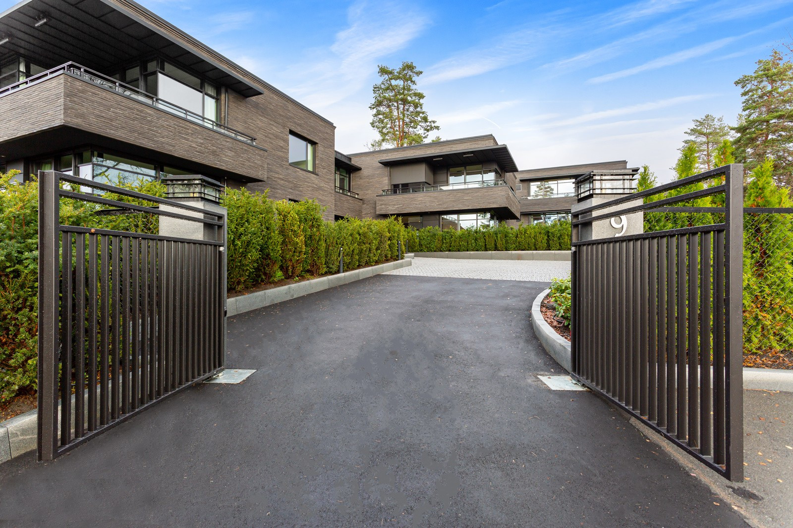

Byggrådgiver og byggherreombud i Oslo
For deg som skal bygge, bygge om eller pusse opp.
Byggherreerfaring fra Oslo vest
Vi har vært byggherre på egne prosjekter i Oslo i over 15 år: leiligheter og eneboliger på Slemdal, Voksenkollen, Ullern og i Holmenkollåsen, med høy standard, underjordiske garasjeanlegg og store glassflater. Vi har samarbeidet med arkitekter som Jon Støre og Arkitektkontoret Niels Torp, og vi har rehabilitert en eldre bolig tegnet av Arnstein Arneberg.
Den erfaringen bruker vi nå for deg som skal bygge, bygge om eller pusse opp i Oslo, og som vil ha noen ved siden av seg i møte med arkitekter, konsulenter og entreprenører.
Dette hjelper vi med
- Tidlig fase: vurdering av tomt og prosjektmuligheter, og hva som bør settes ut til arkitekt, advokat eller takstmann.
- Beskrivelse og tilbud: prosjektbeskrivelse, innhenting av tilbud og en vurdering av hva tilbudene faktisk dekker.
- Eldre boliger: materialvalg, metoder og kvalitet med respekt for bygningens karakter og de tekniske kravene.
- Byggetiden og overtakelsen: oppfølging på byggeplass, fremdrift og en ryddig overtakelse.
Du kan få hjelp med hele prosessen eller bare med deler av den. Se alle tjenestene.
Et utvalg av prosjektene våre
Leilighetsbygg, eneboliger, regulering og rehabilitering av eldre boliger, i Bærum og Oslo:
- Heyerdahls vei 9, Slemdal i Oslo: åtte leiligheter med underjordisk garasje og heis, fasader i håndlaget tegl, arkitekt Jon Støre, ferdig 2022.
- Åsbrekka 1–25, Voksenkollen i Oslo: 13 eneboliger med underjordisk parkering, regulert sammen med Arkitektkontoret Niels Torp, ferdig 2018.
- Lillevannsveien 17 C, Holmenkollåsen i Oslo: rehabilitering av vinduer og fasade på en eldre bolig tegnet av Arnstein Arneberg.
- Ringstabekkveien 78, Jar i Bærum: tomannsbolig i funkisstil tegnet av Søren Yran, ferdig 2013, og totalrehabilitering av eneboligen på samme adresse.
Hele listen, med bilder, ligger under referanser.
Hvem vi er
Dag Badendyck har fagbrev som tømrer og er arkitekt og prosjektleder. Hans Krøvel har juridisk embetseksamen og er prosjektleder. Begge har jobbet med eiendomsutvikling siden 2010. Mer om oss.
Ta kontakt med oss
Send oss en e-post eller ring oss for en uforpliktende vurdering av ditt prosjekt.